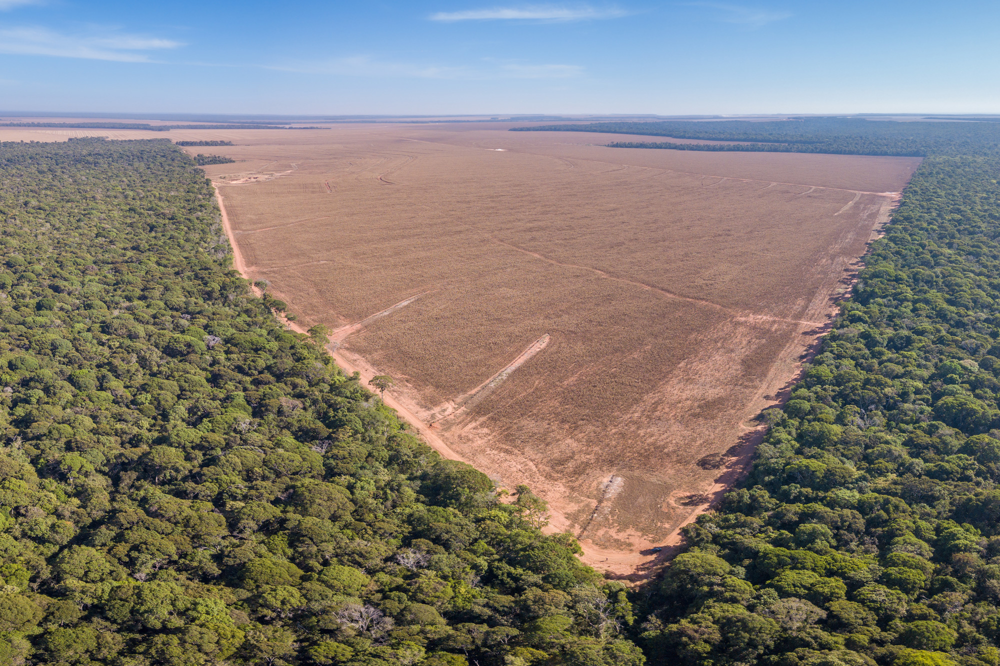

Un nouveau paradigme pour l’exploitation forestière sélective
L ’exploitation forestière sélective, souvent présentée comme une alternative durable, révèle en réalité des limites importantes. Elle affecte directement la résilience climatique des écosystèmes forestiers. Pour répondre aux enjeux actuels, un changement profond des pratiques est nécessaire.
Réduire l’intensité d’exploitation
L’intensité d’exploitation est l’un des facteurs majeurs de dégradation des forêts. Dans certaines régions tropicales, les prélèvements dépassent largement la capacité naturelle de régénération.
Une réduction d’au moins 40% permettrait de maintenir la production de bois tout en assurant une régénération plus naturelle des écosystèmes.

Economists Ben Olken du MIT and Clare Balboni, Cambridge, USA
Allonger la durée de rotation
La durée de rotation actuelle est insuffisante pour permettre aux forêts de se reconstituer. En Amazonie, elle devrait passer de 30 à 60 ans.
« Allonger les cycles d’exploitation permet de restaurer les équilibres écologiques et de renforcer le stockage du carbone. »
Ce changement limite les impacts à long terme et favorise la récupération des sols ainsi que la biodiversité.

Diversifier les espèces exploitées
L’exploitation repose souvent sur un nombre limité d’espèces, ce qui fragilise les équilibres écologiques.
Une diversification permet de :
- Renforcer la résilience climatique
- Limiter les risques sanitaires
- Répartir la pression sur les ressources
Le potentiel des forêts secondaires
Les forêts naturelles ne suffiront pas à répondre à la demande mondiale. Il devient essentiel de valoriser les forêts dégradées et secondaires.
Correctement gérées, elles peuvent devenir des ressources durables tout en contribuant à la restauration écologique.

Vers une gestion durable
Le véritable enjeu est de passer d’une logique d’exploitation à une logique de gestion intégrée des écosystèmes.
Réduction de l’intensité, allongement des cycles et diversification des espèces constituent les bases d’un modèle plus durable.
À long terme, seule une approche combinant science, politiques publiques et gestion responsable permettra de préserver les forêts tropicales.